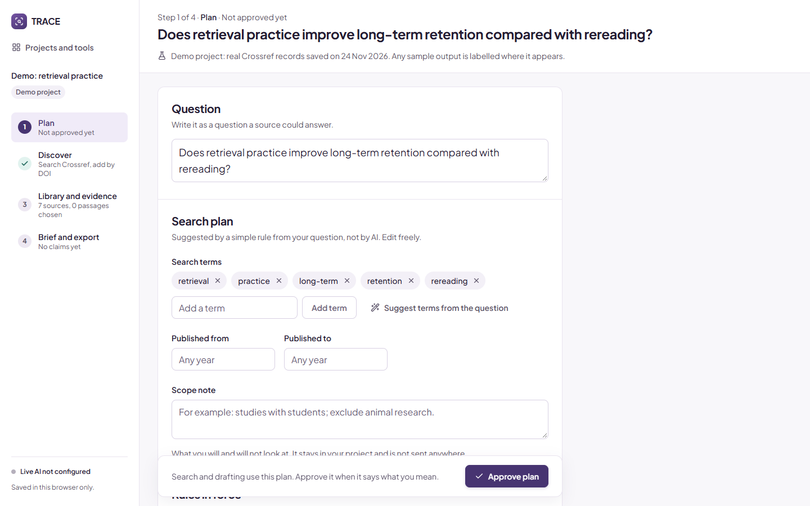
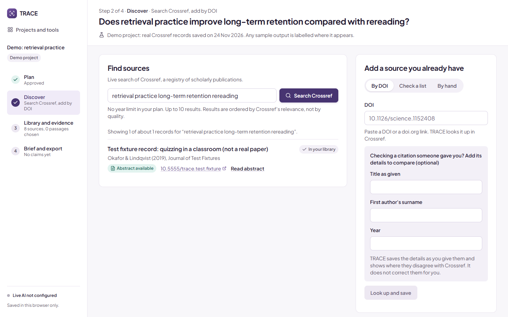
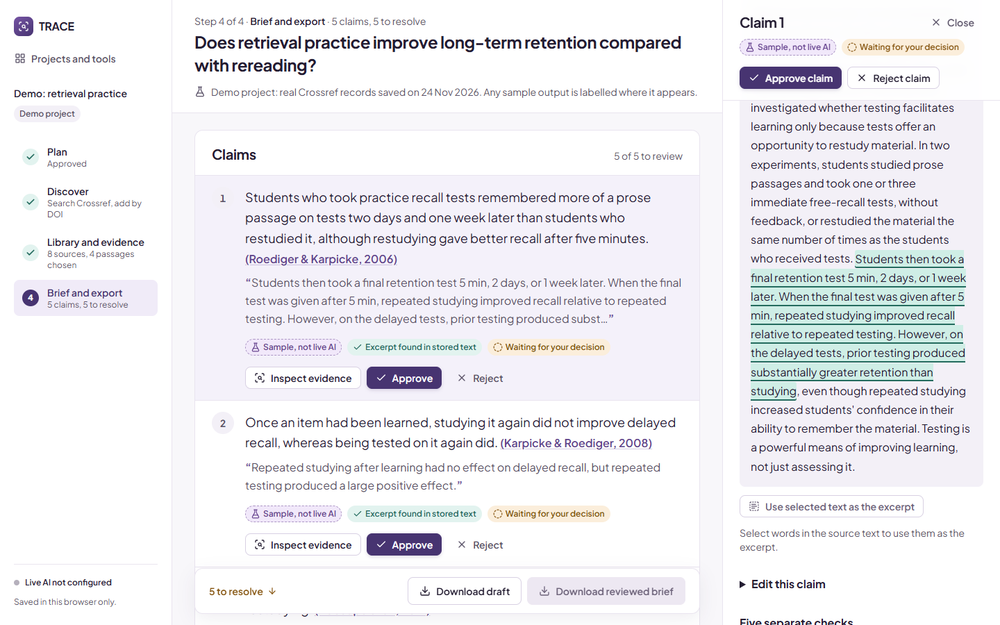

AI Club Hackathon 2026 · SP Jain · Presenter guide
TRACE
Research you can defend.
Everything you need to understand TRACE, run the demo and answer the judges, without reading the code.
Team: Atharva, Maitrayee, Shirley
Live site: {{LIVE_LINK}}
Code: github.com/mercydeez/trace-hackathon
Event: Thursday 26 November 2026, arrive 1:15 PM, Simulation Lab, 2nd floor. Demo is 8 minutes plus 2 minutes of questions, strictly timed.
If you remember one sentence: “A real DOI does not make a claim supported.”
Contents
- The 60-second version
- The problem we were given, and how we are scored
- The big idea: five questions, kept separate
- A tour of the app
- How it works underneath (plain language)
- The eight guardrails
- The demo, minute by minute, with a suggested speaker split
- Judges’ questions and good answers
- What we never say, before you walk up, if something breaks
- Glossary and quiz revision
1
The 60-second version
Students use AI to write assignments. AI tools make four kinds of citation mistakes: they give a real author the wrong paper, cite a DOI that does not exist, quote a sentence that is not in the source, or state a guess as a fact. The student is blamed for every one.
TRACE is a website that is two things at once: a reference manager (find, save, tag and cite real papers) and a careful AI research assistant (it drafts short claims, but only from passages the student approved).
What makes it different: most checkers stop at “does this DOI exist?”. TRACE asks five separate questions about every claim and never merges them into one green tick. The student approves each step, and a single export gate blocks the final brief until every problem is fixed.
The student’s journey, in four steps
1Plan: write the question; TRACE suggests search terms (by a simple rule, not AI); the student approves.
2Discover: search Crossref (the official registry of scholarly papers), add a paper by DOI, or check a reference list.
3Library and evidence: organise sources with tags and notes; tick the passages the AI may use; approve that evidence set.
4Brief and export: AI drafts up to five claims (or the student writes them); every claim is checked; the student approves each one; the student writes their own text with citations checked as they type; export the brief in APA 7 or Harvard with an honest AI-use statement.
Why judges should care
- The checks are tested automatically. 173 unit tests and 15 production browser journeys passed.
- The “citation trap” in the demo is not scripted. It is a copy of the project with two planted mistakes, and the same checks catch them live.
- It is honest about its limits: it reads abstracts, not full papers, and says so everywhere.
2
The problem we were given, and how we are scored
The organisers asked for a website that helps researchers manage references and cite honestly, and that also works as an AI research assistant: the organisation of a reference manager plus the speed of AI, without invented references. The student must be able to trust that every reference is real and every claim traces to its source, and must stay in charge of final decisions.
What the judges score on the day (Phase 2, 65 points)
| Criterion | Points | Where TRACE earns it |
|---|
| Working MVP | 15 | The whole journey runs end to end on the live site: plan → search → library → evidence → claims → inspect → export. |
| Research and citation features | 12 | Live Crossref search, add by DOI, check a pasted reference list, tags/notes/filters, writing space with citation checks, APA 7 or Harvard, retraction flags. |
| Honesty and verification in action | 10 | The citation trap: a changed number in a quote and wrong reference details are both caught and block export. |
| Day-of requirements | 8 | “Rules in force” and one-file-per-feature design make new requirements quick to add. See section 9. |
| User experience | 8 | Four numbered steps, the status of each step shown in the sidebar, every blocked button says why. |
| Presentation and Q&A | 12 | Clear demo, strong answers, every member speaks. |
Also scored: the Phase 1 deck (30 points, judged before the event) and a team AI quiz (5 points, 3:15 PM).
“Every member contributes” is part of the 12 presentation points. Both of you speak in the demo and both of you take questions. Be honest about roles if asked (see section 8).
3
The big idea: five questions, kept separate
A typical checker gives one “Verified” badge. That hides the real problem: a paper can be real and still not say what the student claims. TRACE answers five different questions for every claim and shows each one on its own.
| # | Question | How TRACE answers it | Who decides |
|---|
| 1 | Reference identity: is this the paper we say it is? | Compares the cited title, first author and year with Crossref’s record for that DOI. Shows each disagreement. | Code |
| 2 | Evidence access: what text do we actually have? | Abstract, a passage the student pasted, or nothing. Always labelled. | Code |
| 3 | Excerpt integrity: is the quoted sentence really in that text? | Exact text match. Numbers and “not” must match too. The real passage is highlighted. | Code |
| 4 | Support: does the quote back up the claim? | Only the AI’s suggestion, labelled “AI-suggested, can be wrong”. TRACE never scores it itself. | AI (fallible) |
| 5 | Student decision: did the student approve this? | Pending, approved, rejected, or stale if anything changed after approval. | Student |
Three rules that make it trustworthy
- The AI can never write a reference. References are built by a citation formatter (Citation.js) from registry data. The AI’s answer has no field for a title, author or DOI, and an answer containing one is rejected.
- The AI can only cite approved evidence. Each passage has an ID. If the AI cites any other ID, that claim is rejected and shown as rejected.
- Approvals expire when content changes. TRACE stores a fingerprint of what was approved. Edit one word and the approval becomes stale, so nothing stays approved by accident.
“Not found” is not “fake”. If Crossref has no record, TRACE says “Not found in Crossref. This does not show the paper is fake.” If the internet is slow, it says “Could not check”, never “Not found”. Being precise about what we know is the whole point.
4
A tour of the app
The left sidebar shows the four steps; the line under each step is its live status. Click any step to go there.

Plan. The question, search terms suggested by a simple rule (not AI), year range, and “Rules in force” (AI drafting on/off, oldest year, block retracted papers). Nothing can be searched until the plan is approved.

Discover. Live Crossref search. Each result says whether an abstract exists. You can also add a paper by DOI, enter one by hand (labelled “not checked”), or paste a whole reference list to check it.

Library and evidence. A list on the left, details on the right: the source text, the formatted reference, a table comparing what you cite with what Crossref records, tags and notes. Tick “Use in the evidence set” for passages the AI may use, then approve the set (you can see exactly what would be sent to the AI).

Brief and the Claim Inspector. Each claim shows its quote, its source and its status chips. “Inspect evidence” opens the inspector on the right: the real source text with the quote highlighted, the five checks, and the only Approve / Reject buttons.

Your text (writing space). A recognised author–date citation with no matching source, such as “(Smith & Jones, 2020)”, is flagged and blocks reviewed export.

The citation trap. A labelled test copy with planted errors. Claim 1 quotes “1 month”; the real abstract says “1 week”. The paper is real, but the claim is not supported, and the export is blocked until it is fixed.
5
How it works underneath (plain language)
In the browser
- The whole workspace (the four steps and the inspector).
- All the checks, written as small, tested functions.
- The student’s work is saved in the browser’s own storage. No accounts, no database, no tracking. There is a JSON backup and restore.
On our server (only to talk to outside services)
- Crossref: search and DOI lookups.
- OpenAlex: an abstract when Crossref has none.
- Google Gemini: one AI call to draft claims. The key stays on the server.
- Citation.js: formats references in APA 7 or Harvard.
What leaves the student’s browser
Search terms and DOIs go to Crossref and OpenAlex. The question and the approved passages go to Gemini, only when the student presses “Draft with AI”. Nothing else. On Gemini’s free tier Google may use what is sent, which the app tells the student.
Built with
Next.js and React (website), TypeScript (code), Tailwind (styling), Vitest and Playwright (automated tests), Citation.js (references), Gemini 3.5 Flash-Lite (AI, free tier). Hosted on Vercel.
Why it is easy to change on the day
| If the organisers ask for… | We change… |
|---|
| Another source or AI provider | one adapter file |
| A new check or trust label | one function, plus the export gate |
| A new rule or policy | one field in “Rules in force”, plus the export gate |
| Another citation style | one style name |
| Another export format | one builder function |
6
The eight guardrails
| What could go wrong | What TRACE does |
|---|
| An invented reference | Citation.js formats stored source records. TRACE rejects model-supplied reference fields and labels hand-entered records. |
| Citing a source the student never approved | The AI may only return IDs from the approved evidence set. Anything else is rejected and shown. |
| A quote that is not in the source | Exact text match against the stored text. Curly quotes, spacing and capitals are tolerated; numbers, “not” and punctuation are not. |
| A claim that says more than its quote | Every number and negation in the claim must also be in its quote, or export is blocked. |
| A real DOI with the wrong details, or a retracted paper | Title, first author and year are compared with Crossref; differences are shown, never fixed silently. Retracted papers get their own “Retracted” label and are blocked by default. |
| A guess stated as fact | Points without a source passage are marked “inference”. No confidence scores, no “Verified” badge. |
| A stale approval, or unreviewed work leaving the tool | Approvals expire on any edit. One export gate re-checks everything; otherwise the file is marked DRAFT. |
| A failure dressed up as success | “Not found” and “Could not check” are different. Sample output is labelled everywhere, including in the exported file. |
Sample vs live. The “Load sample brief” button loads claims we wrote during development, labelled “Sample, not live AI” on every claim and in the export. It is a separate button. If a live AI call fails, TRACE never quietly substitutes the sample.
7
The demo, minute by minute
Suggested split: Maitrayee opens and walks the journey; Shirley runs the trap and the checks; Atharva drives the laptop and covers the day-of change and technical questions. Swap freely; just make sure each person speaks. Rehearse twice with a stopwatch.
| Time | Who | Do | Say (in your own words) |
|---|
| 0:00 | Maitrayee | Point at the welcome comparison. Click Run the citation trap. | “One changed word can make a citation misleading. This labelled test copy uses the same checks as a normal project.” |
| 0:30 | Shirley | Inspect claim 1. Fix the quote first, then the timing in the claim. Approve it. | “TRACE found the corrected quote. I still had to fix the claim that said one month.” |
| 1:30 | Shirley | Inspect claim 2. Use Crossref’s year and first author. Download the reviewed test copy. | “The DOI resolves. The cited details differ from the registry. Correcting both lets me download the reviewed test copy.” |
| 2:15 | Maitrayee | In Projects and tools, open the normal demo. Approve the plan, then search Crossref. | “I choose the search terms. Results show whether there is text I can use.” |
| 3:15 | Maitrayee | In Library, show a reference, add a tag, and select four passages. | “I can organise the library and see the record and passage behind a citation.” |
| 4:15 | Shirley | Preview the model request, approve the evidence set and draft. | “I approve the passages. Both live Gemini and the labelled sample go through the same checks.” |
| 5:15 | Shirley | Inspect and approve claims. Show the brief’s provenance and disclosure. | “The file shows what we kept, where it came from and what TRACE’s AI did.” |
| 6:20 | Shirley | If time allows, edit an approved claim and show stale approval. | “An edit asks me to approve the claim again.” |
| 7:00 | Atharva | Show the day-of change if required. | “We were asked for ___. Here’s where it changes the workflow.” |
| 7:30 | Maitrayee | Close on limits. | “This demo uses abstracts. Text matching checks the stored words. The student interprets the evidence and approves the brief.” |
Short on time? Skip the stale-approval example and show the reviewed test copy you downloaded at 1:30. If search is slow, use the preloaded library.
Sample passages: Test-Enhanced Learning, The Critical Importance of Retrieval for Learning, Rethinking the Use of Tests, and Improving Students’ Learning With Effective Learning Techniques.
8
Judges’ questions and good answers
“The DOI resolves. Isn’t that verified?”
It shows the reference exists and whether its details match the registry. It says nothing about whether the claim is in the paper. That is why identity and the quote check are separate, and why the trap uses a real DOI.
“You only read abstracts. Isn’t that weak?”
Yes, and we label it on every claim and in the export. Abstracts are what free registries reliably provide. A student can paste a passage from the full paper; it is then labelled as pasted. We chose narrow and honest over broad and wrong.
“Why not just use Zotero, Elicit or ChatGPT?”
Zotero already looks up DOIs and Elicit already links claims to quotes; we don’t claim those are new. ChatGPT can invent references. What we show is a small workflow where the checks are visible, five statuses stay separate, approvals expire when content changes, and one gate enforces it at export.
“How do you stop the AI inventing a reference?”
It has no way to write one. Its answer may only contain an approved evidence ID, a claim, a quote and limitations. Anything else is rejected. References come from registry data through Citation.js.
“What if the AI or the internet is down?”
Search says “Could not check”, never “not found”. Without AI the student writes claims by hand; the checks and export work the same. The sample is a separate, labelled button and never replaces a failed call.
“What does the student control?”
The plan, which passages the AI may use, every claim one by one, every correction to reference details, and the export. There is no “approve all”.
“Is the AI’s support rating reliable?”
No, and it is labelled as a suggestion that can be wrong. TRACE never calculates a confidence score.
“What about hidden instructions inside a paper’s text?”
Passages are sent as clearly marked data, the AI has no tools, and its answer must still pass the same checks. An answer that obeyed a hidden instruction would cite something we reject.
“Privacy?”
Work stays in the browser. No accounts, no tracking. Only search terms go to Crossref, and only the question and approved passages go to the AI, when the student asks.
“Is the history tamper-proof?”
No. It is a local convenience history, and we say so.
“Who built what?”
Atharva built the application with Claude Code and Codex. The main prompts are in the prompt log. Each presenter should describe the code, testing, rehearsal or presentation work they actually did.
“How did you test it?”
173 unit tests and 15 production browser tests passed, including the trap and an invalid model answer. A separate smoke test checked live Crossref, OpenAlex and Gemini.
9
What we never say
- Never say “verified”, “guaranteed”, “100% accurate” or “detects plagiarism”.
- Never say the AI’s rating is reliable, or that TRACE checks the paper is correct.
- Never say “fake” when Crossref says “not found”.
- Never present the sample brief as live AI.
- Never quote SP Jain policy: we were not given its text.
Before you walk up
- Open the submitted URL in a fresh browser profile so the welcome screen shows.
- Run the live smoke test before presenting. Use the labelled sample if live drafting is unavailable.
- Prepare a local production server on the presentation laptop as a backup.
- Laptop charged, charger, browser zoom at 100%, notifications off. Formal dress.
If something breaks
- Internet down: use the running local server for the demo sources, sample brief, citation trap and export.
- AI says it is busy or out of allowance: press Load sample brief and say “this is our labelled sample”.
- Page looks wrong: switch to the local demo or open the submitted link in a fresh browser profile.
- Lost your place: click the step in the sidebar; each step starts at its top.
If the organisers announce a new requirement on the day
Atharva builds it; the rest of the team keeps rehearsing. Write one sentence for the 7:00 slot: what was asked, what changed, and that the design from our deck is unchanged.
10
Glossary
| DOI | Digital Object Identifier: a permanent ID for a paper, like 10.1126/science.1152408. |
| Crossref | The main official registry of DOIs and their details (title, authors, year, sometimes abstract). |
| OpenAlex | A free open catalogue of research; we use it only for an abstract when Crossref has none. |
| Abstract | The short summary at the top of a paper. TRACE’s evidence is usually the abstract. |
| Excerpt | The exact sentence a claim quotes from the source. |
| Evidence set | The passages the student approved for the AI to use. Nothing else is sent. |
| APA 7 / Harvard | Two common referencing styles. TRACE produces either one from the same stored data. |
| Citation.js | An open-source tool that formats references. It, not the AI, writes every reference. |
| Retraction | When a journal withdraws a paper (for example for misconduct). Crossref publishes retraction notices. |
| Stale | An approval that no longer applies because something changed after it was given. |
| Export gate | The single check that decides whether a “reviewed” brief can be downloaded. |
| Gemini | Google’s AI model; we use the free Flash-Lite version through its API. |
AI quiz revision (team quiz, 3:15 PM, 5 minutes)
The questions are unknown; these are sensible topics, not predictions.
- What a large language model is; tokens, context window, training vs. inference.
- Hallucination: why models produce fluent but false statements, including fake citations.
- Retrieval-augmented generation (RAG) and grounding; why grounding reduces but doesn’t remove errors.
- Prompt injection; structured output; human-in-the-loop; AI agents vs. fixed pipelines.
- Bias in training data and search; privacy terms of AI services; academic integrity and AI disclosure.
- DOI, Crossref, OpenAlex, what a reference manager does, APA 7 basics.